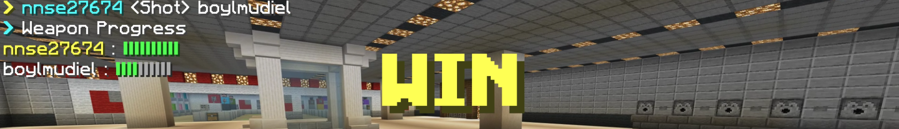

概要

レベリングは、BowyersMCの2番目のゲームです。
敵を倒すごとにウェポンが変化し、すべて使い切った時点で勝利になります。
キルされたプレイヤーは何度でも復活できます。
フェーズ
エントリー

エントリーのフェーズです。
ウェポンの選択はできず、エアライドが初期ウェポンに固定されます。
変化していくウェポンの順番は完全ランダムで、ゲームごとに順番がシャッフルされます。
すべてのエントリールームには商売人がいます。
左クリックで攻撃するとサプライウェポンのメニューが開き、ゲーム内でランダムに支給されるウェポンのプールへの登録ができます。
このモードでは、サプライプール内の選別がゲーム開始即時に行われ、なんのサプライが排出されるか即座にわかります。
プリパレ―ション
戦闘準備のフェーズです。
プレイヤーが透明化つきの状態で一点からスポーンします。
この準備フェーズでは、変化するウェポンの順番が公開されるほか、商売人が渡すサプライウェポンが公開されます。
透明化が10秒後に消えるので、それまでに臨戦態勢を整えましょう。
メインプレイ

メインフェーズです。
画面上には、鎧の状態と人数、キル数、残り時間、Ping、全員のウェポンの進行状況が表示されます。
ゲームが開始されてから、20秒が経過すると商売人が現れます。
サプライウェポンをうまく活用してゲームを優位に進めましょう。
バリアブロックで周りがふさがれていないため、落下の危険性があるので注意が必要です。
ノックバックを発生させるウェポンには特に注意しましょう。
商売人

ゲーム開始後20秒が経過するとスポーン地点に現れます。
最初に攻撃したプレイヤーへサプライウェポンを差し出します。
素手で攻撃しても、弓で射貫いても商売人は反応してくれます。
一度敵にキルされると、透明化状態でスポーン地点に戻されます。
この時は全ての敵から自分が、自分から全ての敵が見えない状態になります。
10秒が経過すると、音とともに手元へ鎧が付与されます。
落下でリスポーンした場合は鎧は付与されません。
エンド

ゲーム終了のフェーズです。
ゲームの勝敗結果と、参加者がどのウェポンまで到達したかが表示されます。
ゲーム自体、脱落したプレイヤーは観戦せずに退室することが可能ですが、このリザルト画面には退室したプレイヤーの記録も確認できます。
終了時には勝者のイミテイトが剥がされ、纏っていたプレイヤーのスキンに戻ります。
勝ち負け判定
・最終ウェポンでのキル達成
正真正銘のひとり勝ちです。
・時間切れ
一番進行が早いプレイヤーが勝利になります。